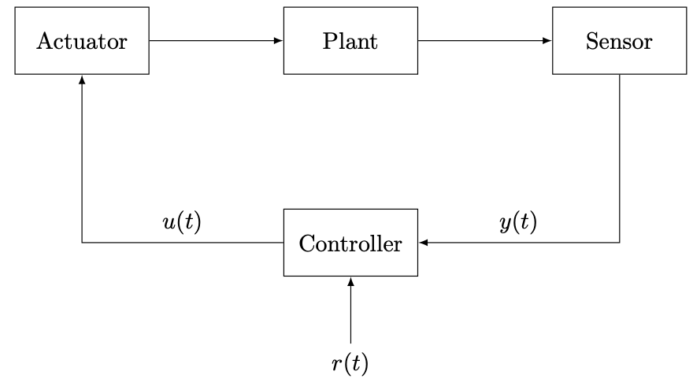

Control system
Control systems in ECLib consists of a plant, sensor, actuator, and controller as shown in the figure below.

Plant
Plant is a discrete-time linear time-invariant system to be controlled and is given by the state-space representation
where \(x \in \mathbb{R}^n\) is a state, \(u \in \mathbb{R}^m\) is an input, \(y \in \mathbb{R}^\ell\) is an output, \(A \in \mathbb{R}^{n \times n}\) is a state matrix, \(B \in \mathbb{R}^{n \times m}\) is an input matrix, \(C \in \mathbb{R}^{\ell \times n}\) is an output matrix, and \(D \in \mathbb{R}^{\ell \times m}\) is a feedforward matrix. Plant class in ECLib represents and creates the dynamical system.
>>> plant = Plant(A, B, C, D, x0)
The constructor takes 1D or 2D array-like variables A, B, C, D, and x0 to specify the system matrices and initial state.
The current state, input, and output can be accessed as class members.
>>> x = plant.state
>>> u = plant.input
>>> y = plant.output
Plant class includes update() method for updating the current state based on the state equation.
>>> plant.update()
Sensor
Sensor class represents and creates a sensor to measure the plant output.
>>> sensor = Sensor()
This class includes get_output() method for computing and obtaining the current output based on the output equation.
>>> y = sensor.get_output(plant)
Actuator
Actuator class represents and creates an actuator to set the plant input.
>>> actuator = Actuator()
This class includes set_input() method for setting the current input to a specified control input.
>>> actuator.set_input(plant, u)
The specified input u is computed by the controller in general.
Controller
Controller is a discrete-time linear time-invariant system given by the state-space representation
where \(x_c \in \mathbb{R}^{n_c}\) is a controller state, \(A_c \in \mathbb{R}^{n_c \times n_c}\) is a state matrix, \(B_c \in \mathbb{R}^{n_c \times \ell}\) is a input matrix, \(C_c \in \mathbb{R}^{m \times n_c}\) is a output matrix, \(D_c \in \mathbb{R}^{m \times \ell}\) is a feedforward matrix, \(E_c \in \mathbb{R}^{n_c \times q}\) is a reference input matrix, and \(F_c \in \mathbb{R}^{m \times q}\) is a reference feedforward matrix. Controller class represents and creates the controller as similar to Plant class.
>>> controller = Controller(Ac, Bc, Cc, Dc, Ec, Fc, xc0)
The constructor takes 1D or 2D array-like variables to specify the controller parameters and initial state.
Controller class provides get_output() method for updating the controller state and computing control input based on the dynamics with a sensor output and reference input.
>>> u = controller.get_output(y, r)
Consequently, a basic code for each step to simulate the control system is as follows.
>>> r = 1 # set a reference
>>> y = sensor.get_output(plant) # measure an output
>>> u = controller.get_output(y, r) # compute a control input
>>> actuator.set_input(plant, u) # set the control input
>>> plant.update() # update the plant state